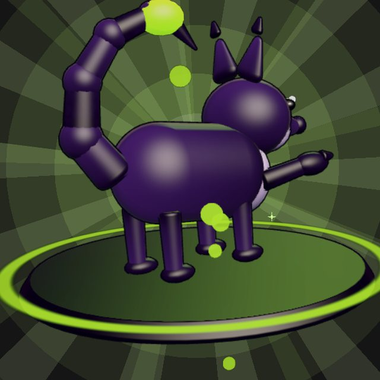
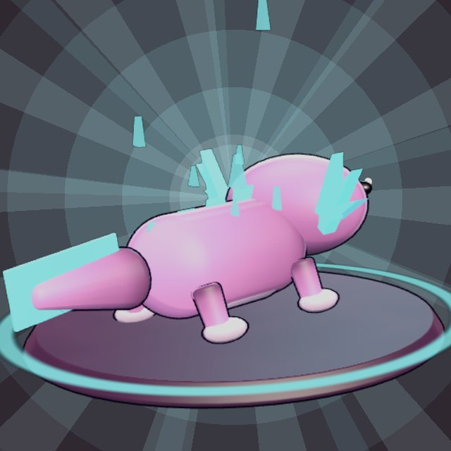
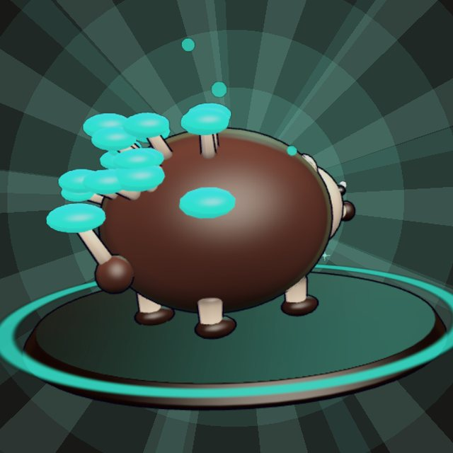
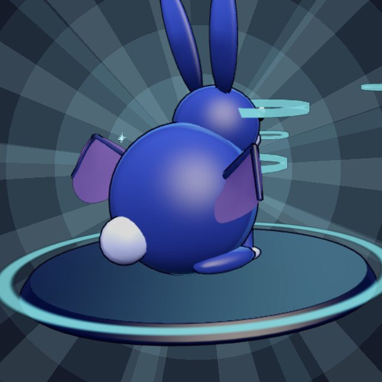
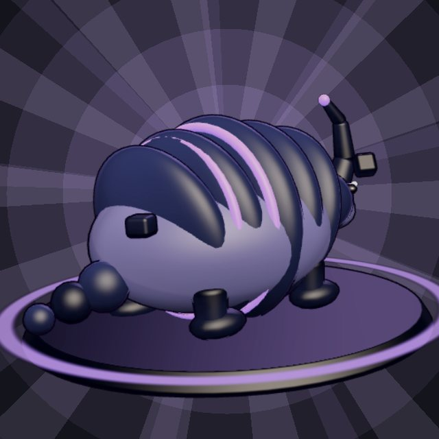
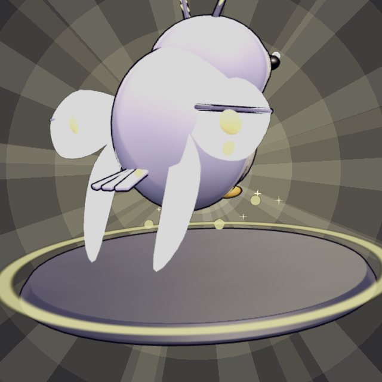
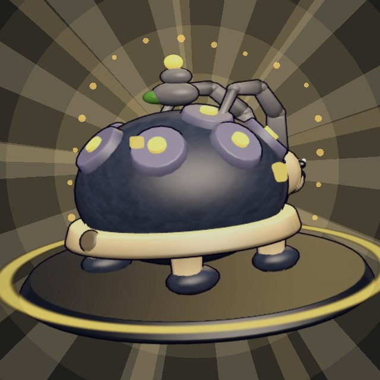
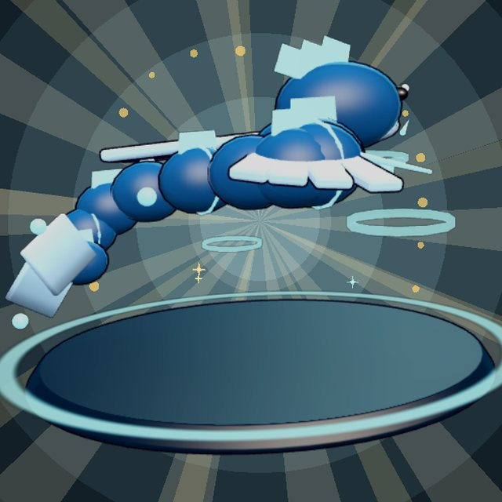
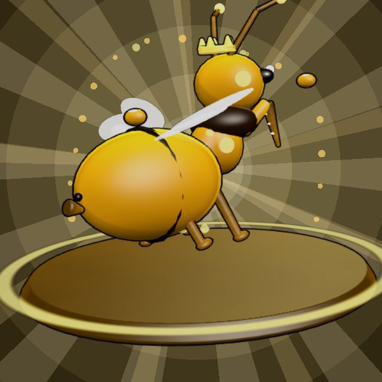

Project Boki
Project Boki
The Farm
Raise them
Plant crops, build up your island and look after your Boki. Feed them, brush them, train them and give them jobs. Each one remembers what you do together and decides how far it trusts you.
A creature-raising farm and a PvPvE extraction game in one. Your Boki live with you on a floating island, then ride on your shoulder into 20-player expeditions where you can win new ones or lose your own.
Plant crops, build up your island and look after your Boki. Feed them, brush them, train them and give them jobs. Each one remembers what you do together and decides how far it trusts you.

Drop from a skyship into a PvPvE match against rival squads, monsters and wild Boki. Loot, fight, and find a way out before the islands fall. One life, and on the higher tiers your Boki can be taken.
Each species is built from one or two real animals and has an element of its own. No two are the same: personality, traits and bond all vary from Boki to Boki.

A sly fox with a scorpion's curled tail. Its sting drips venom that keeps eating at foes after the hit.

An axolotl whose frills grew into living crystal. It bends light into shields and dazzling beams.

A hedgehog whose quills are glowing toadstools. It puffs spore clouds that root foes where they stand.

A long-eared hare with bat wings. It hears everything coming and fires ringing pulses of sound.

An armadillo with a rhino beetle's horn. It rolls up in heavy plates and bends gravity to slam foes down.

A moonlit owl with soft moth wings. It flits on moondust and dazzles foes with silver light.

A tortoise with an ibex's sweeping horns, carrying a little rune-carved cairn on its shell.

A little sky serpent: a moray eel's long body with a swift's swept wings, crackling with static.

A honeybee with a praying mantis's folded blades and a crown of wax. A swarm of tiny bees follows it everywhere.
Nine Boki today. The goal is ~150 at launch, many of them designed by the community.
Bravery, loyalty, temper and curiosity shape how each Boki fights. A timid one backs off when hurt. A reckless order might get refused.
Your Boki rides on your shoulder until you throw it into a fight. It picks targets on its own, then snaps back to you on recall.
Hits and combos fill a shared bond meter. When it's full, your Boki fuses onto you as armor or grows giant and stomps.
Jump from the skyship, glide between floating islands through air rings, and kick off walls. Speed is what keeps you up.
Crack a lair's lock, take down the Stone Colossus, Stormcoil or the Brood Mother, and carry its egg home to hatch a rare Boki.
The Meadow is safe. In the Dusk Isles and the Hollow, the Boki you carry can be looted by rivals. Get them back, or buy them back.
Hatchlings only say their own name. With levels and trust they pick up words, then sentences, then talk freely.
About 1 in 25 Boki hatch or spawn shimmering, with rare colours of their own. Breeding two Boki can pass it on.
Folk-style music for every area: home by day and night, each island, the town, the Hollow. Every track you've heard stays in your house.

Rare colours turn up about once in every 25 Boki.
Project Boki is open source under GPL-3.0. Boki and their abilities are pure data, so anyone can design one without touching the engine code. A headless validator checks every submission so community Boki stay balanced and readable.
{
"name": "Mycroll",
"type": "spore",
"animals": ["Hedgehog", "Toadstool"],
"stats": { "hp": 90, "dmg": 8, "speed": 6.2 },
"traits": {
"bravery": 0.55, "loyalty": 0.6,
"temper": 0.4, "curiosity": 0.8
},
"voice": "curious and odd, notices small things",
"abilities": ["puffcap_mines", "thorn_patch"],
"ultimate": "thornwake",
"ai": { "style": "trapper", "caution": 0.45 },
"throw_hit": { "root": 0.9 }
}
Install Godot 4.6 (the standard build, not .NET), clone the GitHub repo, import project.godot and press F5. Packaged builds will come later.
The game is open source under GPL-3.0, and you can play it from source today. Monetization will come later, if at all, and won't be pay-to-win.
Project Boki is being built as a desktop game for Windows and macOS. Controller support is planned later.
Yes. Kinfall was the working title, and the creatures were called kin. Both got renamed in October 2026. You'll still see the old name in parts of the code.
Yes, that's the point. Boki are pure data files, so you can design one without writing engine code. See Make a Boki.
Star the repo to follow along, or jump into the Discord to playtest and help design Boki.